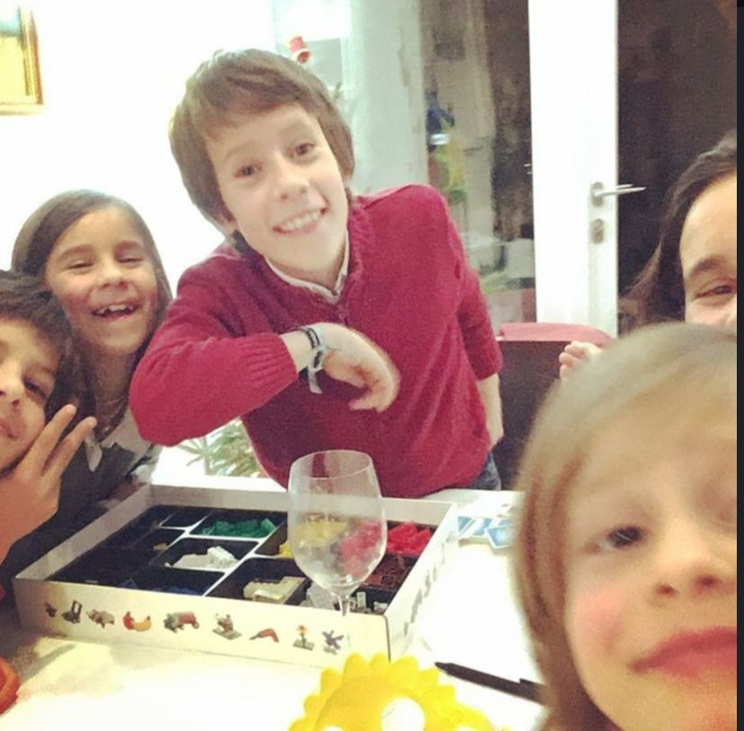
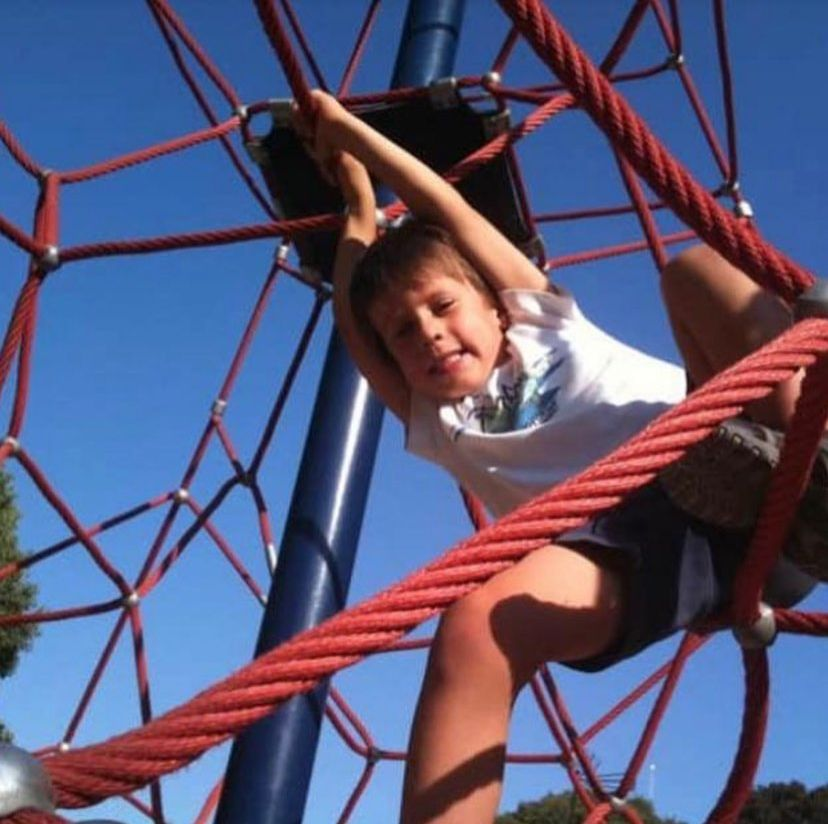
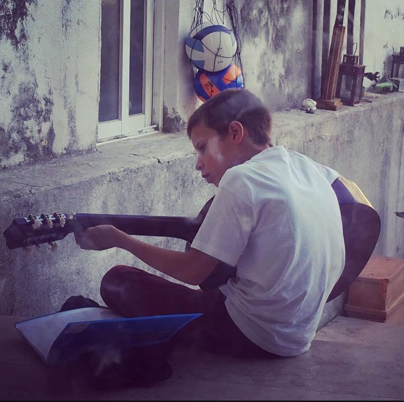
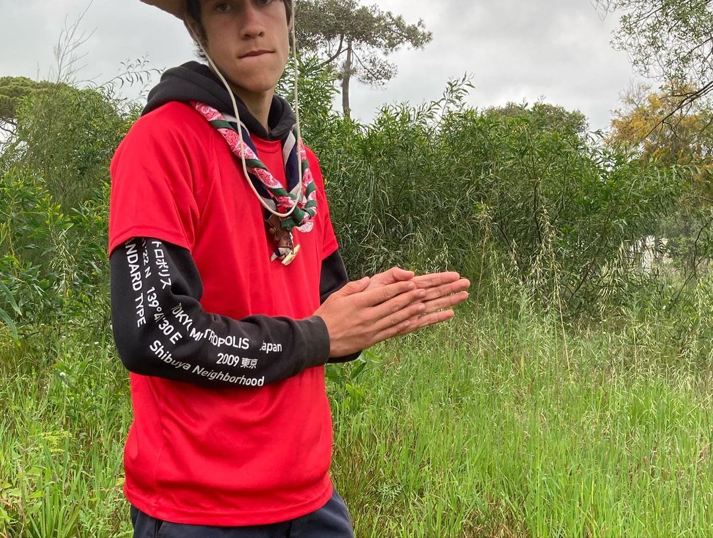
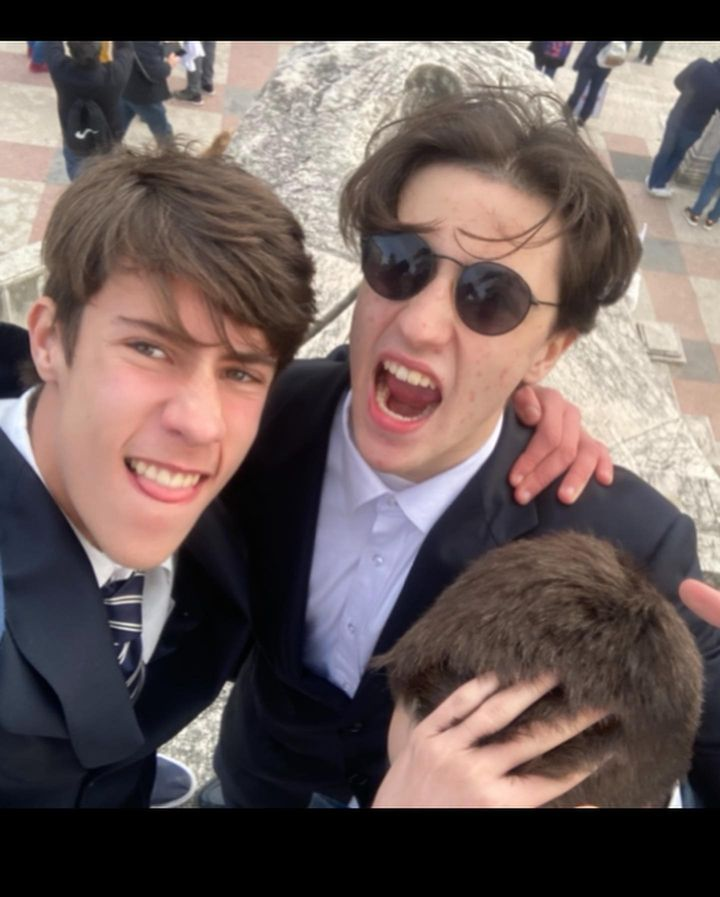
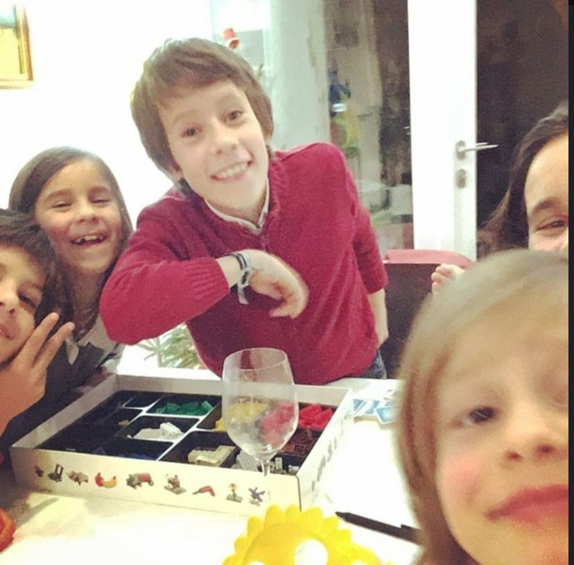
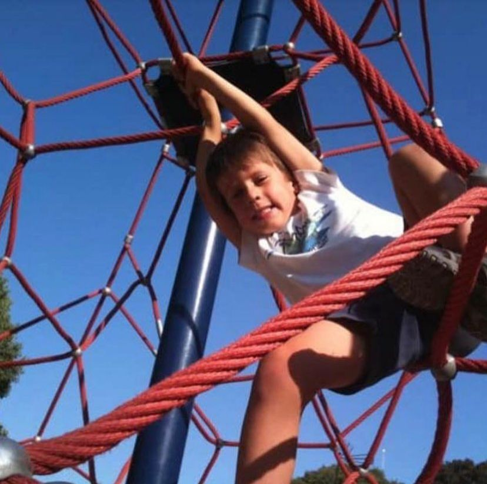
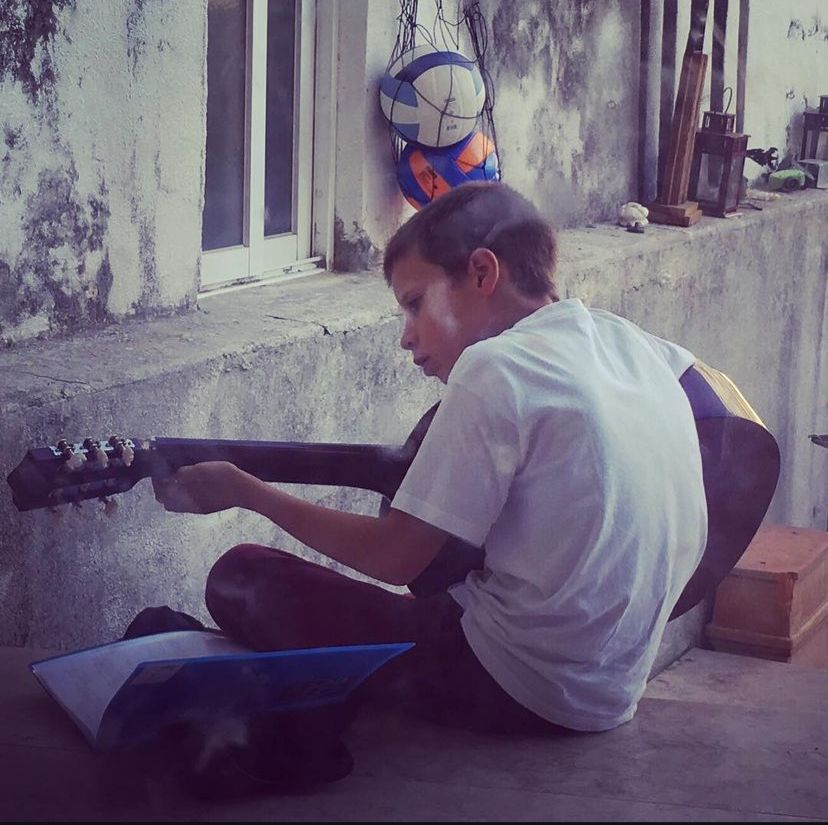
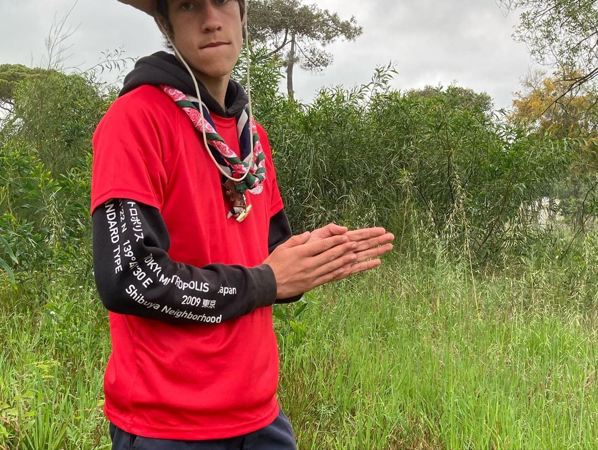
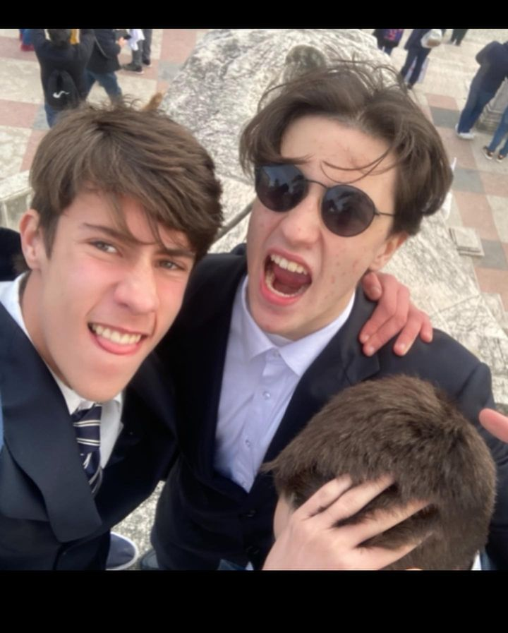

Gil Callado Mendia, conhecido pelo seu título autoproclamado de "Macho Alfa", nasceu no glorioso
dia 29 de julho de 2006, sob um céu iluminado por relâmpagos e trovões, como se a própria natureza estivesse a anunciar a chegada de uma lenda.
Desde o primeiro choro, ficou claro que o mundo nunca mais seria o mesmo. Com apenas três dias de idade, já tinha desarmado o berço, inventado uma
nova forma de chorar que assustava os lobos do seu bairro (Campo de Ourique), e, claro, conquistado o coração de todas as enfermeiras do hospital.
Gil baby.
Desde cedo, Gil demonstrou o seu talento nato para a arte da traquinice. Aos dezasseis anos, já tinha conseguido
obter o sua "Certificado de Traquinices", um documento honorário que só os mais dignos conseguem. Dizem as más-línguas (e algumas boas também)
que a carta foi-lhe concedida pelo famoso Professor Eliseu, mestre das leis da Física e Química, que após sofrer várias partidas épicas do
jovem Gil, decidiu que era mais seguro reconhecê-lo como o verdadeiro mestre das traquinices do que continuar a combatê-lo.
Certificado de traquiniçes do Gil.
O maroto Gil é conhecido pelo seu sentido de humor peculiar e pela sua habilidade inata para gozar com tudo
e todos à sua volta. Reza a lenda que Gil nasceu com o seu admirável dom de gozação. A sua vítima favorita? O amigo inseparável, Maneta.
O Mendia está sempre a gozar com Maneta, a gozar na escola, a gozar em festas, a gozar no carro, no barco, avião. Eles os dois gozam
e gozam todos os dias a toda a hora.
Gil e maneta a andarem de gira.
Uma das grandes conquistas de Gil foi ter convencido o Senhor Martins, o dono da pastelaria local famosa pelos
seus croissants estaladiços, a criar o "Croissant à la Gil". Este croissant é recheado com uma mistura de ingredientes secretos. Dizem que contém muito
gozo e que não é para os de estômago fraco. É apenas vendido apenas para quem tiver coragem de enfrentar o paladar explosivo. Diz-se que o próprio
Gil, depois de provar a primeira fornada, apenas disse: "É bom, mas ainda falta mais gozo 😈."
Imagem recusada pelo senhor martins.
Outra personagem que não podia faltar na vida de Gil é o senhor Luís, o mítico distribuidor do Amanhecer. Com os seus
barulhos deslumbrantes, a sua altura maravilhosa e a sua cara de bonequinho, Gil não consegue resistir àquele homem. Cada vez que o Mendia passa pelo Amanhecer
e está lá o seu amor, ele cai ao chão e começa a chorar, porque Gil verdadeiramente só quer uma coisa na vida. O amor do senhor Luís. Esse mesmo senhor está sempre
a fazer barulhos de sedução, para atrair o Gil, mas depois quando o mesmo chega ao pé dele, o senhor Luís parte o coração do Mendia, deixando-o de rastos e sem significado para a vida.
Mercearia amanhecer.
Não podemos falar de Gil sem mencionar o seu estatuto de Macho Alfa. É uma condição natural, uma espécie de
aura que o acompanha para todo o lado. Dizem que até os lobos da rua se sentam e abanam o rabo quando o veem passar. E as galinhas da quinta
do Rui Vareda? Essas, coitadas, até param de pôr ovos durante uma semana depois de uma simples mirada de Gil.
Gil no seu modo alfa.
O futuro de Gil Callado Mendia é incerto, mas uma coisa é garantida: seja onde for que a vida o leve, ele continuará
a espalhar a sua marca inconfundível de traquinice, gozação e, claro, muito charme de Macho Alfa. E quem sabe, talvez um dia se descubra mesmo as verdadeiras
intenções do Senhor Luís. Até lá, o mundo vai continuar a deliciar-se com as histórias deste jovem prodígio das piadas e traquiniçes.
Gil a pensar.


 








